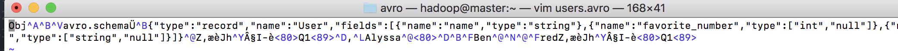

<!DOCTYPE html>
  <html>
    <head>
      <title>file</title>
      <meta charset="utf-8">
      <meta name="viewport" content="width=device-width, initial-scale=1.0">
      
      <link rel="stylesheet" href="file:////Users/vsber/.atom/packages/markdown-preview-enhanced/node_modules/@shd101wyy/mume/dependencies/katex/katex.min.css">
      
      
      
      
      
      
      
      
      

      <style> 
      /**
 * prism.js Github theme based on GitHub's theme.
 * @author Sam Clarke
 */
code[class*="language-"],
pre[class*="language-"] {
  color: #333;
  background: none;
  font-family: Consolas, "Liberation Mono", Menlo, Courier, monospace;
  text-align: left;
  white-space: pre;
  word-spacing: normal;
  word-break: normal;
  word-wrap: normal;
  line-height: 1.4;

  -moz-tab-size: 8;
  -o-tab-size: 8;
  tab-size: 8;

  -webkit-hyphens: none;
  -moz-hyphens: none;
  -ms-hyphens: none;
  hyphens: none;
}

/* Code blocks */
pre[class*="language-"] {
  padding: .8em;
  overflow: auto;
  /* border: 1px solid #ddd; */
  border-radius: 3px;
  /* background: #fff; */
  background: #f5f5f5;
}

/* Inline code */
:not(pre) > code[class*="language-"] {
  padding: .1em;
  border-radius: .3em;
  white-space: normal;
  background: #f5f5f5;
}

.token.comment,
.token.blockquote {
  color: #969896;
}

.token.cdata {
  color: #183691;
}

.token.doctype,
.token.punctuation,
.token.variable,
.token.macro.property {
  color: #333;
}

.token.operator,
.token.important,
.token.keyword,
.token.rule,
.token.builtin {
  color: #a71d5d;
}

.token.string,
.token.url,
.token.regex,
.token.attr-value {
  color: #183691;
}

.token.property,
.token.number,
.token.boolean,
.token.entity,
.token.atrule,
.token.constant,
.token.symbol,
.token.command,
.token.code {
  color: #0086b3;
}

.token.tag,
.token.selector,
.token.prolog {
  color: #63a35c;
}

.token.function,
.token.namespace,
.token.pseudo-element,
.token.class,
.token.class-name,
.token.pseudo-class,
.token.id,
.token.url-reference .token.variable,
.token.attr-name {
  color: #795da3;
}

.token.entity {
  cursor: help;
}

.token.title,
.token.title .token.punctuation {
  font-weight: bold;
  color: #1d3e81;
}

.token.list {
  color: #ed6a43;
}

.token.inserted {
  background-color: #eaffea;
  color: #55a532;
}

.token.deleted {
  background-color: #ffecec;
  color: #bd2c00;
}

.token.bold {
  font-weight: bold;
}

.token.italic {
  font-style: italic;
}


/* JSON */
.language-json .token.property {
  color: #183691;
}

.language-markup .token.tag .token.punctuation {
  color: #333;
}

/* CSS */
code.language-css,
.language-css .token.function {
  color: #0086b3;
}

/* YAML */
.language-yaml .token.atrule {
  color: #63a35c;
}

code.language-yaml {
  color: #183691;
}

/* Ruby */
.language-ruby .token.function {
  color: #333;
}

/* Markdown */
.language-markdown .token.url {
  color: #795da3;
}

/* Makefile */
.language-makefile .token.symbol {
  color: #795da3;
}

.language-makefile .token.variable {
  color: #183691;
}

.language-makefile .token.builtin {
  color: #0086b3;
}

/* Bash */
.language-bash .token.keyword {
  color: #0086b3;
}html body{font-family:"Helvetica Neue",Helvetica,"Segoe UI",Arial,freesans,sans-serif;font-size:16px;line-height:1.6;color:#333;background-color:#fff;overflow:initial;box-sizing:border-box;word-wrap:break-word}html body>:first-child{margin-top:0}html body h1,html body h2,html body h3,html body h4,html body h5,html body h6{line-height:1.2;margin-top:1em;margin-bottom:16px;color:#000}html body h1{font-size:2.25em;font-weight:300;padding-bottom:.3em}html body h2{font-size:1.75em;font-weight:400;padding-bottom:.3em}html body h3{font-size:1.5em;font-weight:500}html body h4{font-size:1.25em;font-weight:600}html body h5{font-size:1.1em;font-weight:600}html body h6{font-size:1em;font-weight:600}html body h1,html body h2,html body h3,html body h4,html body h5{font-weight:600}html body h5{font-size:1em}html body h6{color:#5c5c5c}html body strong{color:#000}html body del{color:#5c5c5c}html body a:not([href]){color:inherit;text-decoration:none}html body a{color:#08c;text-decoration:none}html body a:hover{color:#00a3f5;text-decoration:none}html body img{max-width:100%}html body>p{margin-top:0;margin-bottom:16px;word-wrap:break-word}html body>ul,html body>ol{margin-bottom:16px}html body ul,html body ol{padding-left:2em}html body ul.no-list,html body ol.no-list{padding:0;list-style-type:none}html body ul ul,html body ul ol,html body ol ol,html body ol ul{margin-top:0;margin-bottom:0}html body li{margin-bottom:0}html body li.task-list-item{list-style:none}html body li>p{margin-top:0;margin-bottom:0}html body .task-list-item-checkbox{margin:0 .2em .25em -1.8em;vertical-align:middle}html body .task-list-item-checkbox:hover{cursor:pointer}html body blockquote{margin:16px 0;font-size:inherit;padding:0 15px;color:#5c5c5c;border-left:4px solid #d6d6d6}html body blockquote>:first-child{margin-top:0}html body blockquote>:last-child{margin-bottom:0}html body hr{height:4px;margin:32px 0;background-color:#d6d6d6;border:0 none}html body table{margin:10px 0 15px 0;border-collapse:collapse;border-spacing:0;display:block;width:100%;overflow:auto;word-break:normal;word-break:keep-all}html body table th{font-weight:bold;color:#000}html body table td,html body table th{border:1px solid #d6d6d6;padding:6px 13px}html body dl{padding:0}html body dl dt{padding:0;margin-top:16px;font-size:1em;font-style:italic;font-weight:bold}html body dl dd{padding:0 16px;margin-bottom:16px}html body code{font-family:Menlo,Monaco,Consolas,'Courier New',monospace;font-size:.85em !important;color:#000;background-color:#f0f0f0;border-radius:3px;padding:.2em 0}html body code::before,html body code::after{letter-spacing:-0.2em;content:"\00a0"}html body pre>code{padding:0;margin:0;font-size:.85em !important;word-break:normal;white-space:pre;background:transparent;border:0}html body .highlight{margin-bottom:16px}html body .highlight pre,html body pre{padding:1em;overflow:auto;font-size:.85em !important;line-height:1.45;border:#d6d6d6;border-radius:3px}html body .highlight pre{margin-bottom:0;word-break:normal}html body pre code,html body pre tt{display:inline;max-width:initial;padding:0;margin:0;overflow:initial;line-height:inherit;word-wrap:normal;background-color:transparent;border:0}html body pre code:before,html body pre tt:before,html body pre code:after,html body pre tt:after{content:normal}html body p,html body blockquote,html body ul,html body ol,html body dl,html body pre{margin-top:0;margin-bottom:16px}html body kbd{color:#000;border:1px solid #d6d6d6;border-bottom:2px solid #c7c7c7;padding:2px 4px;background-color:#f0f0f0;border-radius:3px}@media print{html body{background-color:#fff}html body h1,html body h2,html body h3,html body h4,html body h5,html body h6{color:#000;page-break-after:avoid}html body blockquote{color:#5c5c5c}html body pre{page-break-inside:avoid}html body table{display:table}html body img{display:block;max-width:100%;max-height:100%}html body pre,html body code{word-wrap:break-word;white-space:pre}}.markdown-preview{width:100%;height:100%;box-sizing:border-box}.markdown-preview .pagebreak,.markdown-preview .newpage{page-break-before:always}.markdown-preview pre.line-numbers{position:relative;padding-left:3.8em;counter-reset:linenumber}.markdown-preview pre.line-numbers>code{position:relative}.markdown-preview pre.line-numbers .line-numbers-rows{position:absolute;pointer-events:none;top:1em;font-size:100%;left:0;width:3em;letter-spacing:-1px;border-right:1px solid #999;-webkit-user-select:none;-moz-user-select:none;-ms-user-select:none;user-select:none}.markdown-preview pre.line-numbers .line-numbers-rows>span{pointer-events:none;display:block;counter-increment:linenumber}.markdown-preview pre.line-numbers .line-numbers-rows>span:before{content:counter(linenumber);color:#999;display:block;padding-right:.8em;text-align:right}.markdown-preview .mathjax-exps .MathJax_Display{text-align:center !important}.markdown-preview:not([for="preview"]) .code-chunk .btn-group{display:none}.markdown-preview:not([for="preview"]) .code-chunk .status{display:none}.markdown-preview:not([for="preview"]) .code-chunk .output-div{margin-bottom:16px}.scrollbar-style::-webkit-scrollbar{width:8px}.scrollbar-style::-webkit-scrollbar-track{border-radius:10px;background-color:transparent}.scrollbar-style::-webkit-scrollbar-thumb{border-radius:5px;background-color:rgba(150,150,150,0.66);border:4px solid rgba(150,150,150,0.66);background-clip:content-box}html body[for="html-export"]:not([data-presentation-mode]){position:relative;width:100%;height:100%;top:0;left:0;margin:0;padding:0;overflow:auto}html body[for="html-export"]:not([data-presentation-mode]) .markdown-preview{position:relative;top:0}@media screen and (min-width:914px){html body[for="html-export"]:not([data-presentation-mode]) .markdown-preview{padding:2em calc(50% - 457px)}}@media screen and (max-width:914px){html body[for="html-export"]:not([data-presentation-mode]) .markdown-preview{padding:2em}}@media screen and (max-width:450px){html body[for="html-export"]:not([data-presentation-mode]) .markdown-preview{font-size:14px !important;padding:1em}}@media print{html body[for="html-export"]:not([data-presentation-mode]) #sidebar-toc-btn{display:none}}html body[for="html-export"]:not([data-presentation-mode]) #sidebar-toc-btn{position:fixed;bottom:8px;left:8px;font-size:28px;cursor:pointer;color:inherit;z-index:99;width:32px;text-align:center;opacity:.4}html body[for="html-export"]:not([data-presentation-mode])[html-show-sidebar-toc] #sidebar-toc-btn{opacity:1}html body[for="html-export"]:not([data-presentation-mode])[html-show-sidebar-toc] .md-sidebar-toc{position:fixed;top:0;left:0;width:300px;height:100%;padding:32px 0 48px 0;font-size:14px;box-shadow:0 0 4px rgba(150,150,150,0.33);box-sizing:border-box;overflow:auto;background-color:inherit}html body[for="html-export"]:not([data-presentation-mode])[html-show-sidebar-toc] .md-sidebar-toc::-webkit-scrollbar{width:8px}html body[for="html-export"]:not([data-presentation-mode])[html-show-sidebar-toc] .md-sidebar-toc::-webkit-scrollbar-track{border-radius:10px;background-color:transparent}html body[for="html-export"]:not([data-presentation-mode])[html-show-sidebar-toc] .md-sidebar-toc::-webkit-scrollbar-thumb{border-radius:5px;background-color:rgba(150,150,150,0.66);border:4px solid rgba(150,150,150,0.66);background-clip:content-box}html body[for="html-export"]:not([data-presentation-mode])[html-show-sidebar-toc] .md-sidebar-toc a{text-decoration:none}html body[for="html-export"]:not([data-presentation-mode])[html-show-sidebar-toc] .md-sidebar-toc ul{padding:0 1.6em;margin-top:.8em}html body[for="html-export"]:not([data-presentation-mode])[html-show-sidebar-toc] .md-sidebar-toc li{margin-bottom:.8em}html body[for="html-export"]:not([data-presentation-mode])[html-show-sidebar-toc] .md-sidebar-toc ul{list-style-type:none}html body[for="html-export"]:not([data-presentation-mode])[html-show-sidebar-toc] .markdown-preview{left:300px;width:calc(100% -  300px);padding:2em calc(50% - 457px -  150px);margin:0;box-sizing:border-box}@media screen and (max-width:1274px){html body[for="html-export"]:not([data-presentation-mode])[html-show-sidebar-toc] .markdown-preview{padding:2em}}@media screen and (max-width:450px){html body[for="html-export"]:not([data-presentation-mode])[html-show-sidebar-toc] .markdown-preview{width:100%}}html body[for="html-export"]:not([data-presentation-mode]):not([html-show-sidebar-toc]) .markdown-preview{left:50%;transform:translateX(-50%)}html body[for="html-export"]:not([data-presentation-mode]):not([html-show-sidebar-toc]) .md-sidebar-toc{display:none}
/* Please visit the URL below for more information: */
/*   https://shd101wyy.github.io/markdown-preview-enhanced/#/customize-css */
 
      </style>
    </head>
    <body for="html-export">
      <div class="mume markdown-preview   ">
      <h1 class="mume-header" id="%E5%BA%8F%E5%88%97%E5%8C%96">序列化</h1>

<p>实例代码参考<a href="https://github.com/apache/avro/tree/master/doc/examples/java-example/src/main/java/example">github apache avro  java-examples</a></p>
<h3 class="mume-header" id="%E4%BD%BF%E7%94%A8avro%E4%BB%A3%E7%A0%81%E7%94%9F%E6%88%90%E7%9A%84%E5%BA%8F%E5%88%97%E5%8C%96">使用avro代码生成的序列化</h3>

<p>如果只是编译schema，使用avro-tools 编译schema模式文件生成代码<br>
<code>java -jar avro-tools-1.8.2.jar compile schema user.avsc destination-path</code>，编译schema会生成对应的java类，使用其进行序列化和反序列化</p>
<h3 class="mume-header" id="%E6%97%A0avro%E4%BB%A3%E7%A0%81%E7%94%9F%E6%88%90%E7%9A%84%E5%BA%8F%E5%88%97%E5%8C%96">无avro代码生成的序列化</h3>

<p>schema 文件为user.avsc 如下</p>
<pre class="language-JSON"><span class="token punctuation">{</span><span class="token property">"namespace"</span><span class="token operator">:</span> <span class="token string">""</span><span class="token punctuation">,</span>
 <span class="token property">"type"</span><span class="token operator">:</span> <span class="token string">"record"</span><span class="token punctuation">,</span>
 <span class="token property">"name"</span><span class="token operator">:</span> <span class="token string">"User"</span><span class="token punctuation">,</span>
 <span class="token property">"fields"</span><span class="token operator">:</span> <span class="token punctuation">[</span>
     <span class="token punctuation">{</span><span class="token property">"name"</span><span class="token operator">:</span> <span class="token string">"name"</span><span class="token punctuation">,</span> <span class="token property">"type"</span><span class="token operator">:</span> <span class="token string">"string"</span><span class="token punctuation">}</span><span class="token punctuation">,</span>
     <span class="token punctuation">{</span><span class="token property">"name"</span><span class="token operator">:</span> <span class="token string">"favorite_number"</span><span class="token punctuation">,</span>  <span class="token property">"type"</span><span class="token operator">:</span> <span class="token punctuation">[</span><span class="token string">"int"</span><span class="token punctuation">,</span> <span class="token string">"null"</span><span class="token punctuation">]</span><span class="token punctuation">}</span><span class="token punctuation">,</span>
     <span class="token punctuation">{</span><span class="token property">"name"</span><span class="token operator">:</span> <span class="token string">"favorite_color"</span><span class="token punctuation">,</span> <span class="token property">"type"</span><span class="token operator">:</span> <span class="token punctuation">[</span><span class="token string">"string"</span><span class="token punctuation">,</span> <span class="token string">"null"</span><span class="token punctuation">]</span><span class="token punctuation">}</span>
 <span class="token punctuation">]</span>
<span class="token punctuation">}</span>
</pre><p>序列化到文件users.avro中，代码如下</p>
<pre class="language-java"><span class="token keyword">public</span> <span class="token keyword">class</span> <span class="token class-name">GenericMain</span> <span class="token punctuation">{</span>
    <span class="token keyword">public</span> <span class="token keyword">static</span> <span class="token keyword">void</span> <span class="token function">main</span><span class="token punctuation">(</span>String<span class="token punctuation">[</span><span class="token punctuation">]</span> args<span class="token punctuation">)</span> <span class="token keyword">throws</span> IOException <span class="token punctuation">{</span>
        Schema schema <span class="token operator">=</span> <span class="token keyword">new</span> <span class="token class-name">Parser</span><span class="token punctuation">(</span><span class="token punctuation">)</span><span class="token punctuation">.</span><span class="token function">parse</span><span class="token punctuation">(</span><span class="token keyword">new</span> <span class="token class-name">File</span><span class="token punctuation">(</span><span class="token string">"/home/avro/user.avsc"</span><span class="token punctuation">)</span><span class="token punctuation">)</span><span class="token punctuation">;</span>

        GenericRecord user1 <span class="token operator">=</span> <span class="token keyword">new</span> <span class="token class-name">GenericData<span class="token punctuation">.</span>Record</span><span class="token punctuation">(</span>schema<span class="token punctuation">)</span><span class="token punctuation">;</span>
        user1<span class="token punctuation">.</span><span class="token function">put</span><span class="token punctuation">(</span><span class="token string">"name"</span><span class="token punctuation">,</span> <span class="token string">"Alyssa"</span><span class="token punctuation">)</span><span class="token punctuation">;</span>
        user1<span class="token punctuation">.</span><span class="token function">put</span><span class="token punctuation">(</span><span class="token string">"favorite_number"</span><span class="token punctuation">,</span> <span class="token number">256</span><span class="token punctuation">)</span><span class="token punctuation">;</span>
        <span class="token comment" spellcheck="true">// Leave favorite color null</span>

        GenericRecord user2 <span class="token operator">=</span> <span class="token keyword">new</span> <span class="token class-name">GenericData<span class="token punctuation">.</span>Record</span><span class="token punctuation">(</span>schema<span class="token punctuation">)</span><span class="token punctuation">;</span>
        user2<span class="token punctuation">.</span><span class="token function">put</span><span class="token punctuation">(</span><span class="token string">"name"</span><span class="token punctuation">,</span> <span class="token string">"Ben"</span><span class="token punctuation">)</span><span class="token punctuation">;</span>
        user2<span class="token punctuation">.</span><span class="token function">put</span><span class="token punctuation">(</span><span class="token string">"favorite_number"</span><span class="token punctuation">,</span> <span class="token number">7</span><span class="token punctuation">)</span><span class="token punctuation">;</span>
        user2<span class="token punctuation">.</span><span class="token function">put</span><span class="token punctuation">(</span><span class="token string">"favorite_color"</span><span class="token punctuation">,</span> <span class="token string">"red"</span><span class="token punctuation">)</span><span class="token punctuation">;</span>

        <span class="token comment" spellcheck="true">// Serialize user1 and user2 to disk</span>
        File file <span class="token operator">=</span> <span class="token keyword">new</span> <span class="token class-name">File</span><span class="token punctuation">(</span><span class="token string">"/home/avro/users.avro"</span><span class="token punctuation">)</span><span class="token punctuation">;</span>
        DatumWriter<span class="token operator">&lt;</span>GenericRecord<span class="token operator">></span> datumWriter <span class="token operator">=</span> <span class="token keyword">new</span> <span class="token class-name">GenericDatumWriter</span><span class="token operator">&lt;</span>GenericRecord<span class="token operator">></span><span class="token punctuation">(</span>schema<span class="token punctuation">)</span><span class="token punctuation">;</span>
        DataFileWriter<span class="token operator">&lt;</span>GenericRecord<span class="token operator">></span> dataFileWriter <span class="token operator">=</span> <span class="token keyword">new</span> <span class="token class-name">DataFileWriter</span><span class="token operator">&lt;</span>GenericRecord<span class="token operator">></span><span class="token punctuation">(</span>datumWriter<span class="token punctuation">)</span><span class="token punctuation">;</span>
        dataFileWriter<span class="token punctuation">.</span><span class="token function">create</span><span class="token punctuation">(</span>schema<span class="token punctuation">,</span> file<span class="token punctuation">)</span><span class="token punctuation">;</span>
        dataFileWriter<span class="token punctuation">.</span><span class="token function">append</span><span class="token punctuation">(</span>user1<span class="token punctuation">)</span><span class="token punctuation">;</span>
        dataFileWriter<span class="token punctuation">.</span><span class="token function">append</span><span class="token punctuation">(</span>user2<span class="token punctuation">)</span><span class="token punctuation">;</span>
        dataFileWriter<span class="token punctuation">.</span><span class="token function">close</span><span class="token punctuation">(</span><span class="token punctuation">)</span><span class="token punctuation">;</span>

        <span class="token comment" spellcheck="true">// Deserialize users from disk</span>
        DatumReader<span class="token operator">&lt;</span>GenericRecord<span class="token operator">></span> datumReader <span class="token operator">=</span> <span class="token keyword">new</span> <span class="token class-name">GenericDatumReader</span><span class="token operator">&lt;</span>GenericRecord<span class="token operator">></span><span class="token punctuation">(</span>schema<span class="token punctuation">)</span><span class="token punctuation">;</span>
        DataFileReader<span class="token operator">&lt;</span>GenericRecord<span class="token operator">></span> dataFileReader <span class="token operator">=</span> <span class="token keyword">new</span> <span class="token class-name">DataFileReader</span><span class="token operator">&lt;</span>GenericRecord<span class="token operator">></span><span class="token punctuation">(</span>file<span class="token punctuation">,</span> datumReader<span class="token punctuation">)</span><span class="token punctuation">;</span>
        GenericRecord user <span class="token operator">=</span> null<span class="token punctuation">;</span>
        <span class="token keyword">while</span> <span class="token punctuation">(</span>dataFileReader<span class="token punctuation">.</span><span class="token function">hasNext</span><span class="token punctuation">(</span><span class="token punctuation">)</span><span class="token punctuation">)</span> <span class="token punctuation">{</span>
            <span class="token comment" spellcheck="true">// Reuse user object by passing it to next(). This saves us from</span>
            <span class="token comment" spellcheck="true">// allocating and garbage collecting many objects for files with</span>
            <span class="token comment" spellcheck="true">// many items.</span>
            user <span class="token operator">=</span> dataFileReader<span class="token punctuation">.</span><span class="token function">next</span><span class="token punctuation">(</span>user<span class="token punctuation">)</span><span class="token punctuation">;</span>
            System<span class="token punctuation">.</span>out<span class="token punctuation">.</span><span class="token function">println</span><span class="token punctuation">(</span>user<span class="token punctuation">)</span><span class="token punctuation">;</span>
        <span class="token punctuation">}</span>

    <span class="token punctuation">}</span>
<span class="token punctuation">}</span>
</pre><p>查看保存在users.avro中内容<br>
</p>

      </div>
      <div class="md-sidebar-toc"><ul>
<li><a href="#%E5%BA%8F%E5%88%97%E5%8C%96">序列化</a><br>
* <a href="#%E4%BD%BF%E7%94%A8avro%E4%BB%A3%E7%A0%81%E7%94%9F%E6%88%90%E7%9A%84%E5%BA%8F%E5%88%97%E5%8C%96">使用avro代码生成的序列化</a><br>
* <a href="#%E6%97%A0avro%E4%BB%A3%E7%A0%81%E7%94%9F%E6%88%90%E7%9A%84%E5%BA%8F%E5%88%97%E5%8C%96">无avro代码生成的序列化</a></li>
</ul>
</div>
      <a id="sidebar-toc-btn">≡</a>
    </body>
    
    
    
    
    
    <script>
(function bindTaskListEvent() {
  var taskListItemCheckboxes = document.body.getElementsByClassName('task-list-item-checkbox')
  for (var i = 0; i < taskListItemCheckboxes.length; i++) {
    var checkbox = taskListItemCheckboxes[i]
    var li = checkbox.parentElement
    if (li.tagName !== 'LI') li = li.parentElement
    if (li.tagName === 'LI') {
      li.classList.add('task-list-item')
    }
  }
}())    
</script>
    
<script>

var sidebarTOCBtn = document.getElementById('sidebar-toc-btn')
sidebarTOCBtn.addEventListener('click', function(event) {
  event.stopPropagation()
  if (document.body.hasAttribute('html-show-sidebar-toc')) {
    document.body.removeAttribute('html-show-sidebar-toc')
  } else {
    document.body.setAttribute('html-show-sidebar-toc', true)
  }
})
</script>
      
  </html>